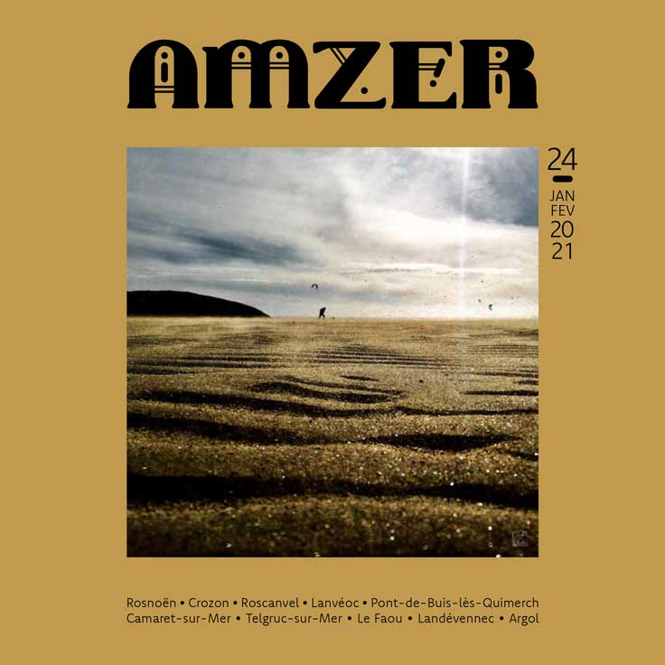

Ce site est en cours de construction. En attendant...
Découvrez Amzer n°24 - Janvrier 2021

Pour lire la version numérique, c'est par
là
Édito - Lumières...
Que 2021 vous offre des matins qui pétillent, des nuits qui scintillent, des rêves qui rayonnent, des visages qui
s’illuminent, des rires qui crépitent, des instants, des échanges, des partages, des surprises, des rencontres
éblouissantes...
Une terre qui flamboie, des ciels éclatants, des vents resplendissants, du plus timide au plus tourbillonnant, du sable
qui poudroie et l’océan chatoyant.
Que cette année toute neuve fasse un pied de nez étincelant à celle qui vient de se terminer...
Nous profitons de ce premier édito de l’année pour dire un grand merci à nos fidèles annonceurs pour leur soutien en
ces temps compliqués. Plus que jamais, très chers lecteurs, pensez aux artisans, aux commerçants et aux producteurs
qui vivent juste à côté. Après octovembre et un numéro virtuel pour décembre, voici le numéro de janvrier et son
grand jeu de début d’année. Rendez-vous au mois de mars !